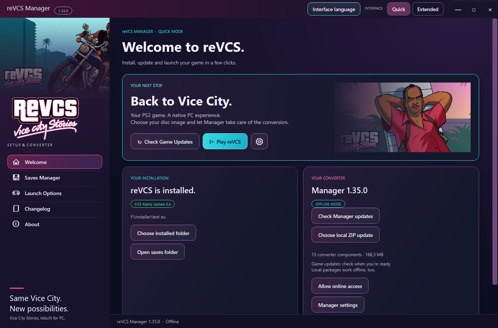

WYRÓŻNIONY FILM
DARMOWY · NIEOFICJALNY · WCZESNA ALPHA
To samo Vice City.
Nowe możliwości.
Grand Theft Auto: Vice City Stories — natywny port na PC
Odkryj Vice City Stories na PC dzięki reVCS — niezależnemu, natywnemu portowi opartemu na reVC i librw. Przygotuj własne pliki gry z PS2, zainstaluj je przez reVCS Manager i śledź dalszy rozwój projektu.
Windows 10 / 11 (64-bit) · Wymagana własna kopia gry na PS2

OBECNY ROZDZIAŁALPHA 0.55 / UPDATE 8.5WERSJA Z BULLET PHYSICS
01 / PROJEKT
Vice City Stories,
odtworzone na PC.
Znajome ulice. Natywny projekt na Windows.
reVCS przenosi Grand Theft Auto: Vice City Stories na Windows, korzystając z reVC i librw. Projekt odtwarza systemy rozgrywki charakterystyczne dla VCS i uruchamia oryginalne skrypty PS2 we własnej maszynie wirtualnej SCM.
Obecna wersja korzysta z Bullet Physics i zawiera natywne pliki wykonywalne x86 i x64. Projekt nadal jest we wczesnej fazie alpha: rozgrywka, grafika, fizyka, zgodność i wydajność rozwijają się wraz z kolejnymi aktualizacjami.
Wydania Manager i aktualności projektu01
Natywny projekt na PC
Oparty na reVC / librw, z plikami wykonywalnymi gry dla Windows x86 i x64.
02
Twoja gra po konwersji
Oryginalne dane pochodzą z Twoich plików gry na PS2. Obraz płyty nie jest dołączony.
03
Wciąż w rozwoju
To wersja alpha. Spodziewaj się niedociągnięć, przesyłaj przydatne zgłoszenia i pomóż kształtować kolejne aktualizacje.
02 / FILMY Z ROZWOJU
Zobacz reVCS w akcji
Vice City Stories. Natywnie na PC.
Zobacz rozgrywkę, prezentacje kolejnych wersji i postępy reVCS — od pierwszych publicznych pokazów po najnowsze usprawnienia.

GTA Vice City Stories — Native PC Port (reVCS) | Development Showcase 2026
Obejrzyj na YouTube : GTA Vice City Stories — Native PC Port (reVCS) | Development Showcase 2026
reVCS — Progress Showcase & Goofing Around | GTA Vice City Stories on PC
Obejrzyj na YouTube : reVCS — Progress Showcase & Goofing Around | GTA Vice City Stories on PC
GTA Vice City stories - completely normal gameplay no commentary
Obejrzyj na YouTube : GTA Vice City stories - completely normal gameplay no commentaryWszystkie filmy są dostępne na YouTube. Jeśli odtwarzacz na stronie nie działa, wybierz „Obejrzyj na YouTube”.
MNIEJ INSTALOWANIA. WIĘCEJ VICE CITY.
Poznaj swoją
drogę powrotną.
Jedno miejsce do instalacji, aktualizacji, tworzenia kopii zapisów i uruchamiania gry.
- Tryb Quick — najważniejsze funkcje
- Tryb Extended — więcej kontroli
- Pakiety lokalne i instalacja offline
- Opcjonalny import paczek tekstur PCSX2
TAK WYGLĄDA APLIKACJA NA WINDOWS 1.35.0

03 / Z PŁYTY NA PULPIT
Trzy kroki.
I jesteś w domu.
- 01
Przygotuj swoją kopię na PS2.
Przygotuj własny obraz ISO Vice City Stories na PS2 lub katalog z zawartością płyty. Zachowaj oryginalną strukturę katalogów.
- 02
Resztą zajmie się Manager.
Rozpakuj archiwum bootstrap ZIP, uruchom Manager i wybierz źródło oraz pusty katalog docelowy. Brakujące komponenty konwertera zostaną pobrane z GitHuba.
- 03
Urządź się w Vice City.
Konwersja instaluje bezpośrednio Update 8.5. Check Game Updates sprawdza kolejne wydania. Uruchom reVCS i ustaw rozdzielczość w grze. Zgodnymi paczkami PCSX2 zarządza tryb Extended.
Pliki źródłowe są odczytywane lokalnie i pozostają niezmienione. Zgodność konwersji jest sprawdzana osobno dla każdego zasobu; inny plik językowy nie oznacza automatycznego odrzucenia całej płyty.
04 / TWÓJ BILET POWROTNY
Miasto
czeka.
Najpierw pobierz mały pakiet startowy.
Manager pobiera komponenty konwertera wtedy, gdy są potrzebne.
MANAGER 1.35.0 · ALPHA 0.55 UPDATE 8.5
reVCS Manager
Windows 10 / 11 · Instalator 64-bitowy
Co zmieniło się w Update 8.5?
Zbiorczy pakiet dla Update 8–8.4. Dodaje adaptacyjny streaming, obsługę mipmap, drogowy GPS, podgląd paczek tekstur i ustawienia reVCS Extras. Zawiera wcześniejsze poprawki gry. Informacje o wydaniu.
Co zmieniło się w Update 8.2?
Dodano powtórki F1; poprawiono kolizje ramp, wsiadanie na JetSki i jego prowadzenie, lot skryptowy oraz usuwanie modeli. Zainstaluj aktualizację na stronie Updates w Manager. Informacje o wydaniu.
Co zmieniło się w Update 8.1?
Naprawiono problem uruchamiania pod Protonem spowodowany końcowymi białymi znakami w danych pojawiania się NPC. W Manager wybierz Updates → Check game updates → Apply available game updates. Informacje o wydaniu.
Co zmieniło się w Manager 1.35.0?
Produkcyjny Manager 1.35.0 dodaje stale widoczny wybór języka, wiele paczek tekstur i priorytety, interaktywne zapisy, ustawienia gry i renderera, aktualizacje ZIP offline, kopie do przywracania i pamięć pobranych plików.
ZANIM WYJEDZIESZ NA ULICE
Kilka rzeczy,
które warto wiedzieć.
Czy reVCS jest darmowe?
Tak. reVCS i jego instalator są udostępniane za darmo. Musisz posiadać własną kopię Grand Theft Auto: Vice City Stories na PS2.
Czy reVCS jest emulatorem?
Nie. reVCS to natywny projekt na PC oparty na reVC i librw. Odtwarza systemy gry i korzysta z oryginalnych danych PS2 dostarczonych przez użytkownika.
Czy potrzebuję oryginalnej gry?
Tak. Przygotuj własny obraz ISO Vice City Stories na PS2 lub katalog z zawartością płyty. Manager konwertuje te pliki lokalnie. Ani ta strona, ani pakiet startowy nie zawierają obrazu płyty PS2.
Z których wersji PS2 mogę korzystać?
Testy konwersji obejmują źródła EU, US i zmodyfikowane polskie wydanie. Pełną instalację EU zweryfikowano z Setup 1.33; źródła US i polskie przeszły testy konwersji zasobów. Inne płyty są sprawdzane według zasobów, a nie stałej listy sum całych obrazów ISO. Nie gwarantuje to konwersji każdej zmodyfikowanej płyty.
Czy mogę zainstalować grę bez internetu?
Tak. Pobierz wszystkie 13 komponentów BIN, bootstrap ZIP i version.xml z tego samego wydania. Rozpakuj bootstrap i umieść pliki BIN obok Manager. Włącz tryb offline i wybierz lokalne źródło PS2.
Jak działają aktualizacje gry i Manager?
Manager sprawdza aktualizacje przy starcie, najpierw proponując własną aktualizację. Pobieranie i instalacja wymagają potwierdzenia. Możesz też użyć Welcome → Check Game Updates lub Check Manager Updates. Sprawdzanie przy starcie wyłączysz w Extended → Advanced; pakiety offline nadal są obsługiwane.
Czy paczki tekstur są dołączone?
Nie. Opcjonalne tekstury zastępcze PCSX2 dostarcza użytkownik. W trybie Extended wybierz własną, zgodną paczkę ZIP lub 7z.
Czy to ukończona gra?
Nie. reVCS to aktywnie rozwijany projekt fanowski w fazie alpha. Istnieją znane ograniczenia, a społeczność nadal prowadzi testy. Manager 1.35.0 usprawnia instalator i aktualizator; Update 8.5 dla gry jest dostępne oddzielnie.
Co podać w zgłoszeniu błędu?
Opisz kroki, wersje gry i Manager, wydanie płyty źródłowej oraz oczekiwany rezultat. Dołącz odpowiedni log i krótkie nagranie, jeśli pomoże. Usuń dane osobowe przed udostępnieniem logów.
Zgłoś problem z instalatoremOD SPOŁECZNOŚCI DLA SPOŁECZNOŚCI
Z miłości do Vice City Stories.
reVCS to niezależny projekt fanowski, który prowadzi DasIstEin20. Agenci programujący AI i asystent AI w przeglądarce wspierają badania, implementację, narzędzia i testy, korzystając z narzędzi, wiedzy i opinii społeczności.
Nic z tego nie powstałoby bez twórców Vice City Stories ani wieloletniej pracy społeczności, cierpliwej inżynierii wstecznej i swobodnego dzielenia się wiedzą. Z głęboką wdzięcznością dla:
- Rockstar Games, Rockstar Leeds i Rockstar NorthZa stworzenie Grand Theft Auto: Vice City Stories — gry, którą kochamy i która zainspirowała ten projekt.
- Zespoły i współtwórcy re3 / reVCZa odtworzone podstawy GTA, dzięki którym ta praca była możliwa.
- aap oraz librw / librwgta / StoriesConv — współtwórcyZa renderowanie, poznanie formatów Stories i konwersję oryginalnych danych gry.
- GTA SA Reversed — współtwórcyZa odtworzone systemy San Andreas i udostępnione badania silnika.
- jessicanataliagta oraz PSPRecomp — współtwórcyZa statyczną rekompilację PSP oraz badania i materiały referencyjne VCS.
- BlackLineInteractive oraz SHO-GTA-VCS-PS2Recomp — współtwórcyZa badania nad rekompilacją PS2 i wspólny projekt referencyjny Silent Hill Origins / GTA VCS.
- gothamor oraz GTA VCS Recomp — współtwórcyZa rekompilację VCS na PS2 i cenny punkt odniesienia dla zachowania oryginalnej gry.
- OgstraZa wspólne prace nad fizyką i czasem niezależnym od liczby klatek.
- Bullet Physics — współtwórcyZa bibliotekę fizyki używaną w tej wersji.
- Sanny Builder — społecznośćZa udostępnioną dokumentację skryptów i badania.
- PCSX2 — współtwórcyZa badania PS2 i narzędzia tekstur wspierające całą społeczność.
- OpenAL Soft i Zstandard — współtwórcyZa biblioteki dźwięku i kompresji wykorzystywane w projekcie.
- Modderzy, badacze inżynierii wstecznej, twórcy paczek tekstur, testerzy i graczeZa dzielenie się odkryciami, zgłaszanie błędów i podtrzymywanie życia Vice City Stories.
„Do społeczności modderskiej i badaczy inżynierii wstecznej GTA: bez Waszej ciężkiej pracy, tworzonych narzędzi i dzielenia się wiedzą reVCS nie byłoby możliwe. Dziękuję Wam z całego serca. ❤️”